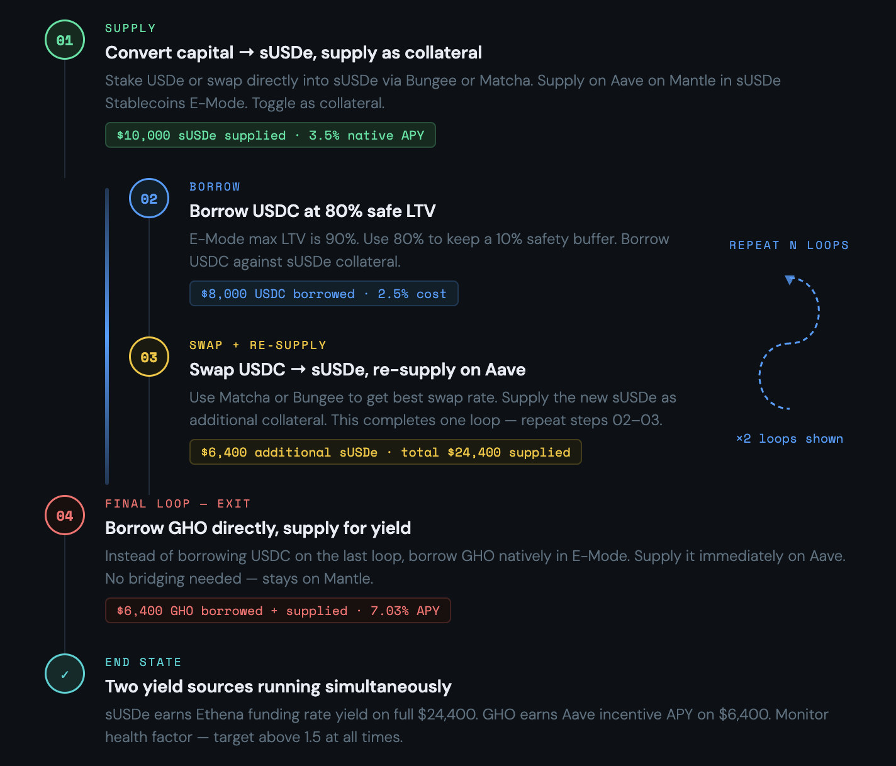
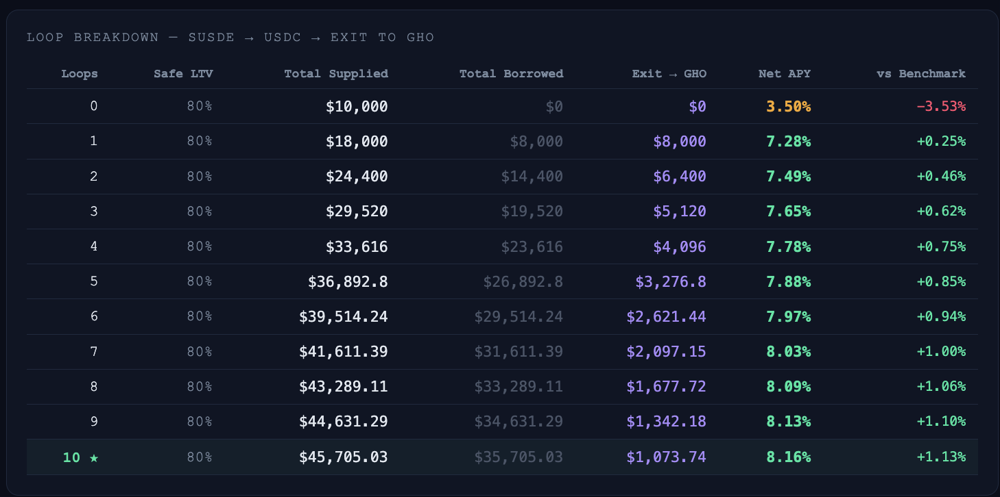
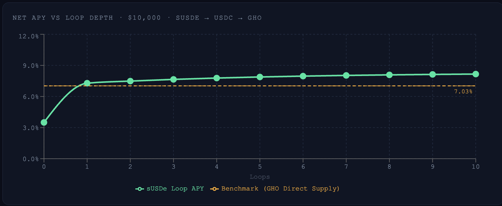
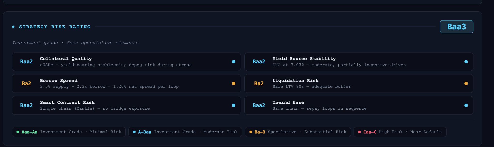
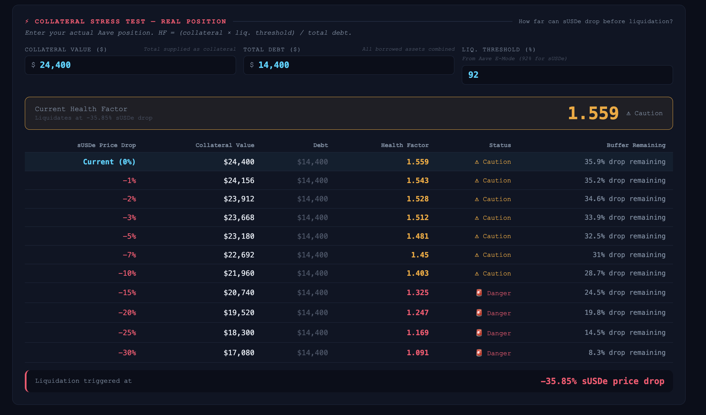
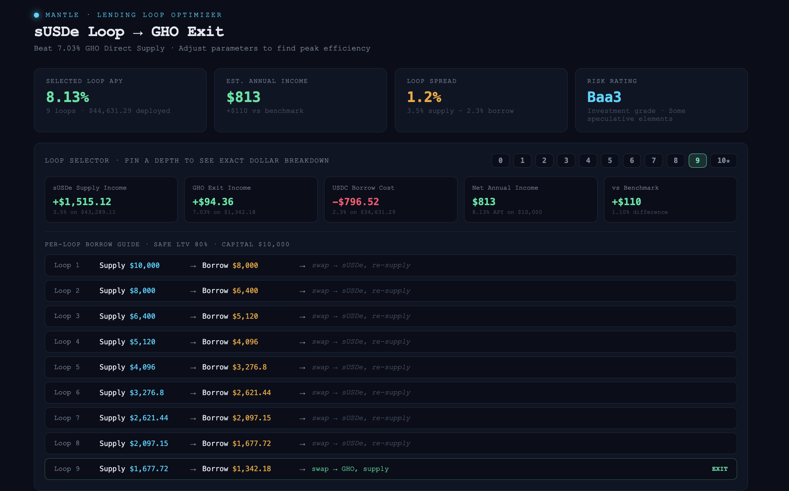

This is a guide for putting stablecoin capital to work more efficiently — not a yield farming play. The strategy uses one chain, known assets, and a clear exit. The risk is real but bounded. Understand it before entering.
What yield looping is
Looping is a DeFi strategy that amplifies yield by cycling capital through a lending protocol. You supply an asset, borrow against it at a lower rate, and re-supply the borrowed funds. Each cycle compounds the spread between your supply rate and your borrow cost.
Done on a single chain with predictable spreads, it's a controlled way to increase yield without taking on directional exposure. Done carelessly, it compresses your liquidation buffer until a small price move triggers a wipe.
This guide covers a specific implementation with a clean exit: looping sUSDe on Aave (Mantle network) using E-Mode, then converting the final borrow into GHO — which earns yield separately at 7.03%.
The setup
Three components:
sUSDe — Ethena's yield-bearing stablecoin, earning ~3.5% natively on Aave on Mantle. Historically above 5% annually. The collateral for the entire position.
E-Mode — Aave's efficiency mode for correlated asset pairs, allowing up to 90% max LTV. This is what makes the math work — a higher LTV means more capital can be deployed per loop.
GHO — Aave's native stablecoin, used as the exit on the final loop. Supplies at 7.03% and earns yield independently from the rest of the position.
How to execute it
The full loop, step by step:

-
1
Get sUSDe. Convert your capital using Bungee or any preferred aggregator, then supply on Aave on Mantle. You're earning 3.5% from this point forward.
-
2
Borrow USDC via E-Mode. E-Mode allows up to 90% max LTV. Use 80% to maintain a 10% safety buffer against liquidation.
-
3
Swap USDC → sUSDe, re-supply. This completes one loop. The net spread on each loop is ~1% (3.5% earned minus 2.5% borrowed). Repeat for N loops based on your risk appetite.
-
4
Exit the final borrow into GHO. On your last loop, swap the borrowed funds to GHO and supply it at 7.03% rather than cycling again. This becomes a separate yield layer on top of the loop position.
-
5
Monitor the position. Set a health factor alert. Know your liquidation price before entering. GHO APY is partially incentive-driven — check it periodically.
The math
Starting with $10,000 initial capital at 80% safe LTV, here's how yield scales with each additional loop:

The benchmark here is GHO direct supply at 7.03%. Holding sUSDe with no loops gives 3.50% — well below it. A single loop jumps you to 7.28%, already beating the benchmark by 25 basis points.

The yield curve flattens fast. The jump from 0 to 1 loop is the biggest gain. After that, each loop adds diminishing yield while compressing your liquidation buffer. At 10 loops, you're at 8.16% — only about 0.3% more than at 5 loops (7.88%), but with meaningfully less room before liquidation.
The practical sweet spot is 3–5 loops for most positions. Better yield than holding, without over-leveraging the collateral buffer.
Risk analysis
Overall strategy risk rating: Baa3 — investment grade with some speculative elements.

Liquidation stress test
This is the check most people skip. Run it before entering.

For a 1-loop position with $24,400 in collateral and $14,400 in debt, the current health factor is 1.559. This is adequate but not comfortable.
The liquidation threshold triggers at approximately −35.85% sUSDe price drop. At −25%, the health factor hits 1.169 — which is Danger territory. At higher loop counts, this threshold moves closer to the current price. Know your number before you enter.
The modelling tool
I built a calculator to model this before executing. It shows real-time APY projections for any loop depth, generates a per-loop borrow guide for any starting capital, and runs the stress test against your actual position size.

Use it to find your number before touching the protocol. Adjust loop depth and watch how the liquidation buffer changes. The goal is to find the point where the yield gain no longer justifies the buffer compression.
Key takeaways
- One loop already beats the GHO direct supply benchmark by 25 basis points
- 3–5 loops is the practical sweet spot — meaningful yield, manageable liquidation buffer
- The final GHO position earns independently, adding a clean second yield layer
- GHO APY is partially incentive-driven — check it periodically, it can move
- Always run the stress test for your actual position size before entering
- Single-chain on Mantle removes bridge risk — a real structural advantage
- Higher loop counts: marginal yield gain, significant buffer compression — not worth it beyond 5 for most risk profiles
If you're curious how I think about products, systems, and trade-offs —
See how I think →